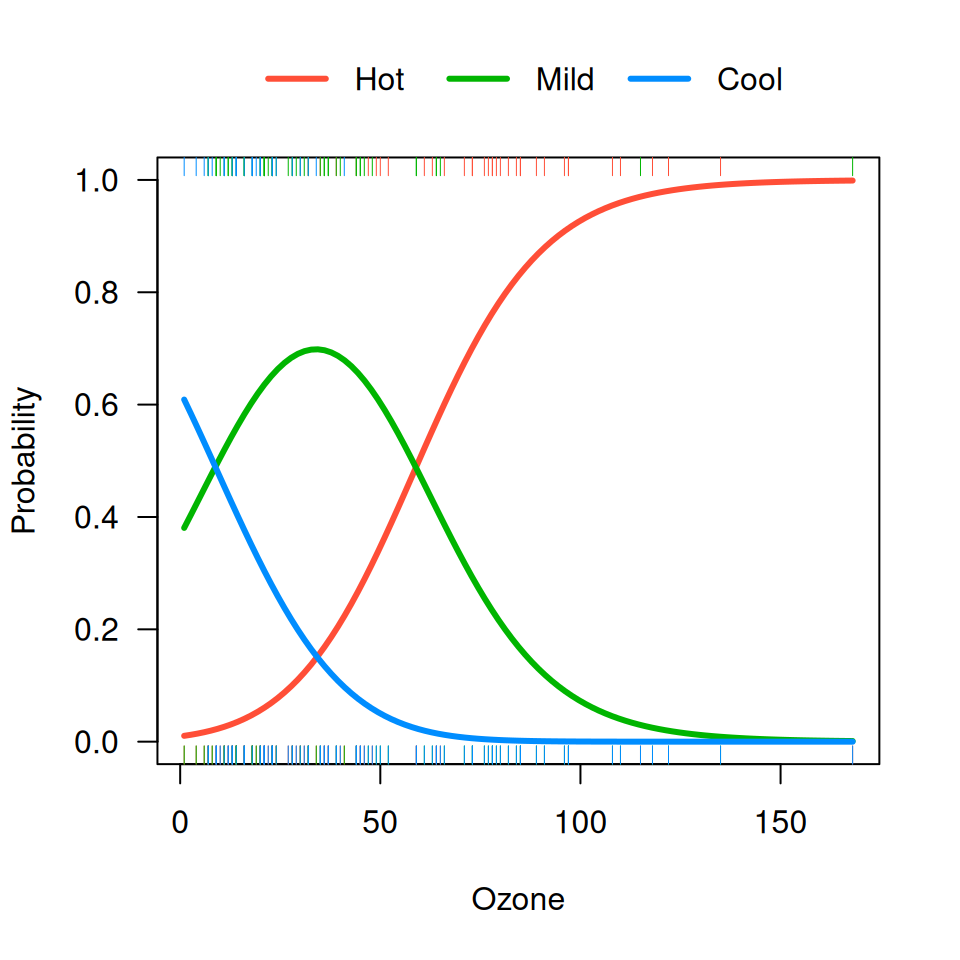
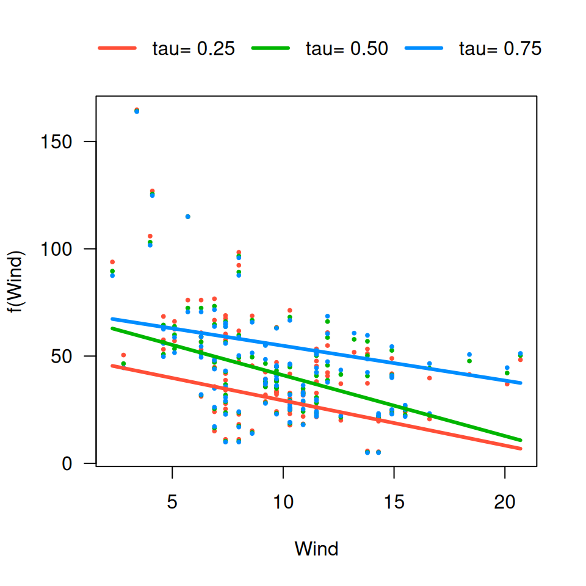
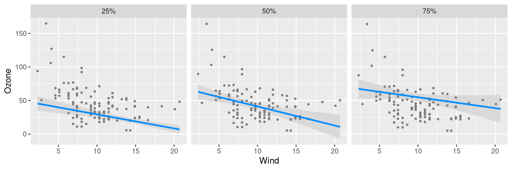

Multiple visreg objects can be bundled together in an
object of class visregList; for example, when you submit
visreg(fit), you get a visregList, one
visreg object for each predictor in the model.
visregLists can also be used for handling models with
multiple outcomes.
For example, suppose we fit a multinomial regression model using the
nnet package:
library(nnet)
airquality$Heat <- cut(airquality$Temp,3,labels=c("Cool","Mild","Hot"))
fit <- multinom(Heat ~ Wind + Ozone, airquality)By default, visreg(fit, "Ozone") would create three
separate plots, one for each level of the outcome, Heat. By
specifying collapse=TRUE, we collapse the list down to a
single visreg object which can be plotted using the methods described here. For example:
visreg(fit, "Ozone", collapse=TRUE, overlay=TRUE, ylab="Probability",
ylim=c(0,1), partial=FALSE, rug=2)
Another example is quantile regression using the
quantreg package. Here, there is only one outcome, but we
could be interested in modeling several different quantiles. The
collapse option is used similarly here:
library(quantreg)
fit <- rq(Ozone ~ Wind + Temp, tau=c(.25, .5, .75), data=airquality)
v <- visreg(fit, "Wind", overlay=TRUE, collapse=TRUE)
NOTE: quantreg does not return standand errors if you
specify multiple quantiles of interest. To obtain them, you must
construct the visregList manually:
fit1 <- rq(Ozone ~ Wind + Temp, tau=.25, data=airquality)
fit2 <- rq(Ozone ~ Wind + Temp, tau=.5, data=airquality)
fit3 <- rq(Ozone ~ Wind + Temp, tau=.75, data=airquality)
v <- visregList(visreg(fit1, "Wind", plot=FALSE),
visreg(fit2, "Wind", plot=FALSE),
visreg(fit3, "Wind", plot=FALSE),
labels=c("25%", "50%", "75%"), collapse=TRUE)
plot(v, ylab="Ozone", gg=TRUE)
# Loading required namespace: ggplot2
Notice the use of the labels argument to label the
elements of the list.